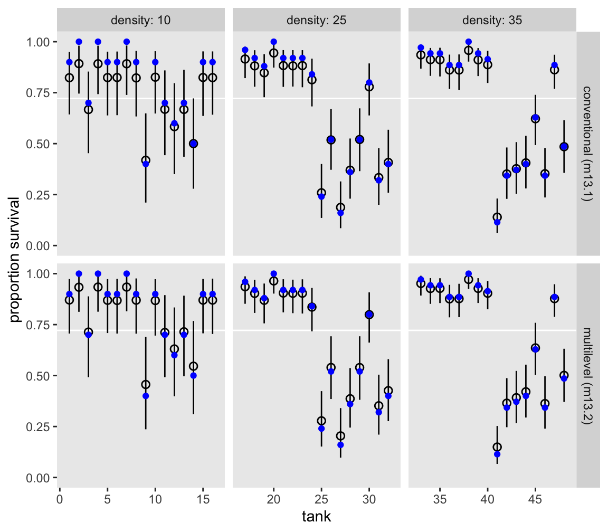

# Load
library(tidyverse)
library(tidybayes)
library(rstan)
library(loo)
library(patchwork)
library(bayesplot)
library(posterior)
# Drop grid lines
theme_set(
theme_gray() +
theme(panel.grid = element_blank())
)13 Models With Memory
Load the packages.
13.0.0.1 Rethinking: A model by any other name.
13.1 Example: Multilevel tadpoles
Let’s load the reedfrogs data (see Vonesh & Bolker, 2005).
data(reedfrogs, package = "rethinking")
d <- reedfrogs |>
# Add a the `tank` cluster variable
mutate(tank = 1:n())
rm(reedfrogs)
# What?
glimpse(d)Rows: 48
Columns: 6
$ density <int> 10, 10, 10, 10, 10, 10, 10, 10, 10, 10, 10, 10, 10, 10, 10, 1…
$ pred <fct> no, no, no, no, no, no, no, no, pred, pred, pred, pred, pred,…
$ size <fct> big, big, big, big, small, small, small, small, big, big, big…
$ surv <int> 9, 10, 7, 10, 9, 9, 10, 9, 4, 9, 7, 6, 7, 5, 9, 9, 24, 23, 22…
$ propsurv <dbl> 0.90, 1.00, 0.70, 1.00, 0.90, 0.90, 1.00, 0.90, 0.40, 0.90, 0…
$ tank <int> 1, 2, 3, 4, 5, 6, 7, 8, 9, 10, 11, 12, 13, 14, 15, 16, 17, 18…Here’s the formula for the un-pooled model in which each tank gets its own intercept:
\[ \begin{align*} \text{surv}_i & \sim \operatorname{Binomial}(n_i, p_i) \\ \operatorname{logit}(p_i) & = \alpha_{\text{tank}[i]} \\ \alpha_j & \sim \operatorname{Normal} (0, 1.5) & \text{for } j = 1, \dots, 48, \end{align*} \]
where \(n_i\) is indexed by the density column. Its values are distributed like so.
d |>
count(density) density n
1 10 16
2 25 16
3 35 16Now we make the stan_data with the compose_data() function.
stan_data <- d |>
select(surv, density, tank) |>
compose_data()
# What?
str(stan_data)List of 4
$ surv : int [1:48(1d)] 9 10 7 10 9 9 10 9 4 9 ...
$ density: int [1:48(1d)] 10 10 10 10 10 10 10 10 10 10 ...
$ tank : int [1:48(1d)] 1 2 3 4 5 6 7 8 9 10 ...
$ n : int 48Make the model_code for the first simple model, which follows the basic format we learned back in Section 11.1.3. Also note how we’re getting ready for information criteria with the generated quantities block.
model_code_13.1 <- '
data {
int<lower=1> n;
array[n] int tank;
array[n] int density;
array[n] int surv;
}
parameters {
vector[n] a;
}
model {
surv ~ binomial(density, inv_logit(a[tank]));
a ~ normal(0, 1.5);
}
generated quantities {
vector[n] log_lik;
for (i in 1:n) log_lik[i] = binomial_lpmf(surv[i] | density[i], inv_logit(a[tank[i]]));
}
'Now fit the model with stan().
m13.1 <- stan(
model_code = model_code_13.1,
data = stan_data,
cores = 4, seed = 13)Check the model summary.
print(m13.1, pars = c("a[1]", "a[48]"), probs = c(0.055, 0.945))Inference for Stan model: anon_model.
4 chains, each with iter=2000; warmup=1000; thin=1;
post-warmup draws per chain=1000, total post-warmup draws=4000.
mean se_mean sd 5.5% 94.5% n_eff Rhat
a[1] 1.70 0.01 0.74 0.59 2.95 6081 1
a[48] -0.06 0.00 0.33 -0.59 0.47 4962 1
Samples were drawn using NUTS(diag_e) at Fri Aug 23 11:44:06 2024.
For each parameter, n_eff is a crude measure of effective sample size,
and Rhat is the potential scale reduction factor on split chains (at
convergence, Rhat=1).Note how I restricted the output to the first and last intercept with the pars argument. You can adjust that code to inspect more or fewer of the intercepts, as desired.
Now consider the multilevel alternative. Its formula is
\[ \begin{align*} \text{surv}_i & \sim \operatorname{Binomial}(n_i, p_i) \\ \operatorname{logit}(p_i) & = \alpha_{\text{tank}[i]} \\ \alpha_j & \sim \operatorname{Normal}(\color{blue}{\bar \alpha}, \color{blue} \sigma) \\ \color{blue}{\bar \alpha} & \sim \color{blue}{\operatorname{Normal}(0, 1.5)} \\ \color{blue} \sigma & \sim \color{blue}{\operatorname{Exponential}(1)}, \end{align*} \]
where
the prior for the tank intercepts is now a function of two parameters, \(\bar \alpha\) and \(\sigma\). You can say \(\bar \alpha\) like “bar alpha.” The bar means average. These two parameters inside the prior is where the “multi” in multilevel arises. The Gaussian distribution with mean \(\bar \alpha\) standard deviation \(\sigma\) is the prior for each tank’s intercept. But that prior itself has priors for \(\bar \alpha\) and \(\sigma\). So there are two levels in the model, each resembling a simpler model. (p. 403, emphasis in the original)
Here we make the model_code_13.2, and fit the model with stan().
model_code_13.2 <- '
data {
int<lower=1> n;
array[n] int tank;
array[n] int density;
array[n] int surv;
}
parameters {
real abar;
vector[n] a;
real<lower=0> sigma;
}
model {
surv ~ binomial(density, inv_logit(a[tank]));
a ~ normal(abar, sigma);
abar ~ normal(0, 1.5);
sigma ~ exponential(1);
}
generated quantities {
vector[n] log_lik;
for (i in 1:n) log_lik[i] = binomial_lpmf(surv[i] | density[i], inv_logit(a[tank[i]]));
}
'
m13.2 <- stan(
model_code = model_code_13.2,
data = stan_data,
cores = 4, seed = 13)Check the model summary.
print(m13.2, pars = c("abar", "sigma", "a[1]", "a[48]"), probs = c(0.055, 0.945))Inference for Stan model: anon_model.
4 chains, each with iter=2000; warmup=1000; thin=1;
post-warmup draws per chain=1000, total post-warmup draws=4000.
mean se_mean sd 5.5% 94.5% n_eff Rhat
abar 1.36 0.00 0.26 0.95 1.78 3120 1
sigma 1.63 0.00 0.22 1.31 2.01 2306 1
a[1] 2.15 0.01 0.86 0.88 3.61 4386 1
a[48] 0.00 0.00 0.33 -0.53 0.54 4909 1
Samples were drawn using NUTS(diag_e) at Sat Aug 24 10:11:29 2024.
For each parameter, n_eff is a crude measure of effective sample size,
and Rhat is the potential scale reduction factor on split chains (at
convergence, Rhat=1).Compare the two models by the WAIC with the extract_log_lik(), waic(), and loo_compare() functions.
loo_compare(
extract_log_lik(m13.1) |> waic(),
extract_log_lik(m13.2) |> waic()
) |>
print(simplify = FALSE) elpd_diff se_diff elpd_waic se_elpd_waic p_waic se_p_waic waic se_waic
model2 0.0 0.0 -99.9 3.7 20.9 0.9 199.9 7.4
model1 -7.2 1.9 -107.1 2.4 25.4 1.3 214.3 4.7 Our results match up nicely with those in the text (p. 404). Here are the stacking weights.
set.seed(13)
loo_model_weights(
list(extract_log_lik(m13.1) |> loo(),
extract_log_lik(m13.2) |> loo()),
method = "stacking"
)Method: stacking
------
weight
model1 0.000
model2 1.000 All the weight goes to the multilevel model.
Here we use a little bind_rows() and spread_draws() magic to make a version of Figure 13.1 based on both models.
bind_rows(
m13.1 |> spread_draws(a[tank]),
m13.2 |> spread_draws(a[tank])
) |>
mutate(model = rep(c("conventional (m13.1)", "multilevel (m13.2)"), each = n() / 2),
propsurv = plogis(a)) |>
group_by(tank, model) |>
mean_qi(propsurv, .width = 0.89) |>
left_join(d |>
select(tank, density),
by = join_by(tank)) |>
ggplot(aes(x = tank, y = propsurv)) +
geom_hline(yintercept = mean(d$propsurv), color = "white") +
geom_pointinterval(aes(ymin = .lower, ymax = .upper),
linewidth = 1/4, shape = 1) +
geom_point(data = d,
color = "blue") +
scale_y_continuous("proportion survival", limits = 0:1) +
facet_grid(model ~ density, labeller = labeller(density = label_both), scales = "free_x")
Here’s a version of Figure 13.2.
set.seed(13)
# Left
p1 <- as_draws_df(m13.2) |>
select(.draw, abar, sigma) |>
slice_sample(n = 100) |>
expand_grid(x = seq(from = -3.5, to = 4.5, length.out = 101)) |>
mutate(density = dnorm(x = x, mean = abar, sd = sigma)) |>
ggplot(aes(x = x, y = density, group = .draw)) +
geom_line(alpha = 1/3, linewidth = 1/3) +
xlab("log-odds survive") +
coord_cartesian(xlim = c(-3, 4))
# Right
p2 <- as_draws_df(m13.2) |>
select(.draw, abar, sigma) |>
slice_sample(n = 8000, replace = TRUE) |>
mutate(sim_tanks = rnorm(n = n(), mean = abar, sd = sigma)) |>
mutate(p = plogis(sim_tanks)) |>
ggplot(aes(x = p)) +
geom_density(adjust = 0.1, fill = "gray65", linewidth = 0) +
labs(x = "probability survive",
y = NULL)
# Combine
p1 | p213.1.0.1 Overthinking: QUAP fails, MCMC succeeds.
13.1.0.2 Rethinking: Varying intercepts as over-dispersion.
13.1.0.3 Overthinking: Prior for variance components.
Here’s how we define and fit the model with the half-normal prior on \(\sigma\).
model_code_13.2b <- '
data {
int<lower=1> n;
array[n] int tank;
array[n] int density;
array[n] int surv;
}
parameters {
real abar;
vector[n] a;
real<lower=0> sigma;
}
model {
surv ~ binomial(density, inv_logit(a[tank]));
a ~ normal(abar, sigma);
abar ~ normal(0, 1.5);
sigma ~ normal(0, 1);
}
'
m13.2b <- stan(
model_code = model_code_13.2b,
data = stan_data,
cores = 4, seed = 13)Check the model summary.
print(m13.2b, pars = c("abar", "sigma", "a[1]", "a[48]"), probs = c(0.055, 0.945))Inference for Stan model: anon_model.
4 chains, each with iter=2000; warmup=1000; thin=1;
post-warmup draws per chain=1000, total post-warmup draws=4000.
mean se_mean sd 5.5% 94.5% n_eff Rhat
abar 1.34 0.00 0.25 0.95 1.74 3765 1
sigma 1.60 0.00 0.20 1.30 1.94 2332 1
a[1] 2.12 0.01 0.88 0.84 3.62 4016 1
a[48] 0.00 0.00 0.33 -0.52 0.55 4640 1
Samples were drawn using NUTS(diag_e) at Sat Aug 24 10:14:08 2024.
For each parameter, n_eff is a crude measure of effective sample size,
and Rhat is the potential scale reduction factor on split chains (at
convergence, Rhat=1).If you’re curious how the exponential and half-Normal priors compare to one another and to their posteriors, you might just plot.
# For descriptive y-axis labels
prior_vec <- c("sigma%~%exponential(1)", "sigma%~%'half-normal(0, 1)'")
# Wrangle
bind_rows(as_draws_df(m13.2), as_draws_df(m13.2b)) |>
mutate(prior = rep(prior_vec, each = n() / 2)) |>
# Plot
ggplot(aes(x = sigma, y = prior)) +
stat_halfeye(point_interval = mean_qi, .width = 0.89,
linewidth = 1, shape = 1) +
scale_y_discrete(NULL, expand = expansion(mult = 0.1),
labels = ggplot2:::parse_safe) +
xlab(expression(sigma[posterior]))In this case, the prior didn’t matter much.
13.2 Varying effects and the underfitting/overfitting trade-off
13.2.1 The model.
The simulation formula should look familiar.
\[ \begin{align*} \text{surv}_i & \sim \operatorname{Binomial}(n_i, p_i) \\ \operatorname{logit}(p_i) & = \alpha_{\text{pond}[i]} \\ \alpha_j & \sim \operatorname{Normal}(\bar \alpha, \sigma) \\ \bar \alpha & \sim \operatorname{Normal}(0, 1.5) \\ \sigma & \sim \operatorname{Exponential}(1) \end{align*} \]
13.2.2 Assign values to the parameters.
Here we follow along with McElreath and “assign specific values representative of the actual tadpole data” (p. 409). Because he included a set.seed() line in his R code 13.8, our results should match his exactly.
a_bar <- 1.5
sigma <- 1.5
n_ponds <- 60
set.seed(5005)
dsim <- tibble(
pond = 1:n_ponds,
ni = rep(c(5, 10, 25, 35), each = n_ponds / 4) |> as.integer(),
true_a = rnorm(n = n_ponds, mean = a_bar, sd = sigma))
# What?
glimpse(dsim)Rows: 60
Columns: 3
$ pond <int> 1, 2, 3, 4, 5, 6, 7, 8, 9, 10, 11, 12, 13, 14, 15, 16, 17, 18, …
$ ni <int> 5, 5, 5, 5, 5, 5, 5, 5, 5, 5, 5, 5, 5, 5, 5, 10, 10, 10, 10, 10…
$ true_a <dbl> 0.56673123, 1.99002317, -0.13775688, 1.85676651, 3.91208800, 1.…McElreath twice urged us to inspect the contents of this simulation. In addition to looking at the data with glimpse(), we might well plot.
dsim |>
mutate(ni = factor(ni)) |>
ggplot(aes(x = true_a, y = ni)) +
stat_dotsinterval(size = 2/3, slab_size = 0, .width = 0.5) +
ggtitle("Log-odds varying by # tadpoles per pond") +
theme(plot.title = element_text(size = 14))
13.2.2.1 Overthinking: Data types and Stan models.
There are two basic types of numerical data in R, in- tegers and real values. A number like “3” could be either. Inside your computer, integers and real (“numeric”) values are represented differently. For example, here is the same vector of values generated as both:
class(1:3)[1] "integer"class(c(1, 2, 3))[1] "numeric"Usually, you don’t have to manage these types, because R manages them for you. But when you pass values to Stan, or another external program, often the internal representation does matter. In particular, Stan and
[ulamstan()] sometimes require explicit integers. For example, in a binomial model, the “size” variable that specifies the number of trials must be of integer type. Stan may provide a mysterious warning message about a function not being found, when the size variable is instead of “real” type, or what R callsnumeric. Usingas.integerbefore passing the data to Stan or[ulamstan()] will resolve the issue. (p. 410)
13.2.3 Sumulate survivors.
Each pond \(i\) has \(n_i\) potential survivors, and nature flips each tadpole’s coin, so to speak, with probability of survival \(p_i\). This probability \(p_i\) is implied by the model definition, and is equal to:
\[p_i = \frac{\exp (\alpha_i)}{1 + \exp (\alpha_i)}\]
The model uses a logit link, and so the probability is defined by the [
plogis()] function. (p. 411)
Although McElreath shared his set.seed() number in the last section, he didn’t share it for this bit. We’ll go ahead and carry over the one from last time. However, in a moment we’ll see this clearly wasn’t the one he used here. As a consequence, our results will deviate a bit from his.
set.seed(5005)
dsim <- dsim |>
mutate(si = rbinom(n = n(), prob = plogis(true_a), size = ni))
# What?
glimpse(dsim)Rows: 60
Columns: 4
$ pond <int> 1, 2, 3, 4, 5, 6, 7, 8, 9, 10, 11, 12, 13, 14, 15, 16, 17, 18, …
$ ni <int> 5, 5, 5, 5, 5, 5, 5, 5, 5, 5, 5, 5, 5, 5, 5, 10, 10, 10, 10, 10…
$ true_a <dbl> 0.56673123, 1.99002317, -0.13775688, 1.85676651, 3.91208800, 1.…
$ si <int> 4, 4, 3, 5, 5, 4, 4, 4, 3, 4, 5, 2, 5, 4, 5, 6, 3, 5, 5, 7, 4, …13.2.4 Compute the no-pooling estimates.
The no-pooling estimates (i.e., \(\alpha_{\text{tank}[i]}\)) are the results of simple algebra.
dsim <- dsim |>
mutate(p_nopool = si / ni)
# What?
glimpse(dsim)Rows: 60
Columns: 5
$ pond <int> 1, 2, 3, 4, 5, 6, 7, 8, 9, 10, 11, 12, 13, 14, 15, 16, 17, 18…
$ ni <int> 5, 5, 5, 5, 5, 5, 5, 5, 5, 5, 5, 5, 5, 5, 5, 10, 10, 10, 10, …
$ true_a <dbl> 0.56673123, 1.99002317, -0.13775688, 1.85676651, 3.91208800, …
$ si <int> 4, 4, 3, 5, 5, 4, 4, 4, 3, 4, 5, 2, 5, 4, 5, 6, 3, 5, 5, 7, 4…
$ p_nopool <dbl> 0.8, 0.8, 0.6, 1.0, 1.0, 0.8, 0.8, 0.8, 0.6, 0.8, 1.0, 0.4, 1…“These are the same no-pooling estimates you’d get by fitting a model with a dummy variable for each pond and flat priors that induce no regularization” (p. 411). That is, these are the same kinds of estimates we got back when we fit m13.1.
13.2.5 Compute the partial-pooling estimates.
Now we make the stan_data with the compose_data() function.
stan_data <- dsim |>
select(si, ni, pond) |>
compose_data()
# What?
str(stan_data)List of 4
$ si : int [1:60(1d)] 4 4 3 5 5 4 4 4 3 4 ...
$ ni : int [1:60(1d)] 5 5 5 5 5 5 5 5 5 5 ...
$ pond: int [1:60(1d)] 1 2 3 4 5 6 7 8 9 10 ...
$ n : int 60Here we define and fit the model with stan().
model_code_13.3 <- '
data {
int<lower=1> n;
array[n] int pond;
array[n] int ni;
array[n] int si;
}
parameters {
real a_bar;
vector[n] a_pond;
real<lower=0> sigma;
}
model {
si ~ binomial(ni, inv_logit(a_pond[pond]));
a_pond ~ normal(a_bar, sigma);
a_bar ~ normal(0, 1.5);
sigma ~ exponential(1);
}
'
m13.3 <- stan(
model_code = model_code_13.3,
data = stan_data,
cores = 4, seed = 13)Check the model summary.
print(m13.3,
pars = c("a_pond[1]", "a_pond[2]",
"a_pond[59]", "a_pond[60]",
"a_bar", "sigma"),
probs = c(0.055, 0.945))Inference for Stan model: anon_model.
4 chains, each with iter=2000; warmup=1000; thin=1;
post-warmup draws per chain=1000, total post-warmup draws=4000.
mean se_mean sd 5.5% 94.5% n_eff Rhat
a_pond[1] 1.55 0.01 0.92 0.16 3.09 4452 1
a_pond[2] 1.56 0.01 0.97 0.07 3.17 5251 1
a_pond[59] 1.83 0.01 0.47 1.13 2.60 5344 1
a_pond[60] 2.70 0.01 0.63 1.76 3.79 4292 1
a_bar 1.47 0.00 0.23 1.12 1.83 3521 1
sigma 1.51 0.00 0.20 1.21 1.85 1713 1
Samples were drawn using NUTS(diag_e) at Sat Aug 24 10:07:57 2024.
For each parameter, n_eff is a crude measure of effective sample size,
and Rhat is the potential scale reduction factor on split chains (at
convergence, Rhat=1).To make Figure 13.3, we’ll first need a couple data objects. The draws data frame has the information for the points, and the draws_means data frame has the information for the horizontal lines.
draws <- m13.3 |>
spread_draws(a_pond[pond]) |>
mutate(p_partpool = plogis(a_pond)) |>
group_by(pond) |>
summarise(p_partpool = mean(p_partpool)) |>
left_join(dsim |>
select(pond, true_a, p_nopool, ni)) |>
mutate(p_true = plogis(true_a)) |>
mutate(nopool_error = abs(p_nopool - p_true),
partpool_error = abs(p_partpool - p_true)) |>
pivot_longer(contains("error"), values_to = "error") |>
mutate(pooling = ifelse(name == "nopool_error", "no", "partial"))
draws_means <- draws |>
group_by(pooling, ni) |>
summarise(mean = mean(error))
# What?
glimpse(draws)Rows: 120
Columns: 9
$ pond <int> 1, 1, 2, 2, 3, 3, 4, 4, 5, 5, 6, 6, 7, 7, 8, 8, 9, 9, 10, 1…
$ p_partpool <dbl> 0.7914621, 0.7914621, 0.7883729, 0.7883729, 0.6594354, 0.65…
$ true_a <dbl> 0.5667312, 0.5667312, 1.9900232, 1.9900232, -0.1377569, -0.…
$ p_nopool <dbl> 0.8, 0.8, 0.8, 0.8, 0.6, 0.6, 1.0, 1.0, 1.0, 1.0, 0.8, 0.8,…
$ ni <int> 5, 5, 5, 5, 5, 5, 5, 5, 5, 5, 5, 5, 5, 5, 5, 5, 5, 5, 5, 5,…
$ p_true <dbl> 0.6380086, 0.6380086, 0.8797456, 0.8797456, 0.4656151, 0.46…
$ name <chr> "nopool_error", "partpool_error", "nopool_error", "partpool…
$ error <dbl> 0.16199142, 0.15345356, 0.07974559, 0.09137274, 0.13438486,…
$ pooling <chr> "no", "partial", "no", "partial", "no", "partial", "no", "p…glimpse(draws_means)Rows: 8
Columns: 3
Groups: pooling [2]
$ pooling <chr> "no", "no", "no", "no", "partial", "partial", "partial", "part…
$ ni <int> 5, 10, 25, 35, 5, 10, 25, 35
$ mean <dbl> 0.09277077, 0.08466391, 0.03337703, 0.02542004, 0.10337870, 0.…Now make the figure.
draws |>
ggplot(aes(x = pond, y = error)) +
geom_point(aes(color = pooling, shape = pooling)) +
geom_hline(data = draws_means,
aes(yintercept = mean, color = pooling, linetype = pooling),
linewidth = 1/3) +
scale_color_viridis_d("Pooling?", option = "A", end = 0.6, direction = -1) +
scale_linetype_manual("Pooling?", values = 1:2) +
scale_shape_manual("Pooling?", values = c(19, 1)) +
ylab("absolute error") +
facet_wrap(~ ni, labeller = label_both, nrow = 1, scales = "free_x")13.2.5.1 Overthinking: Repeating the pond simulation.
Make the new new_dsim data frame, and them update the stan_data.
set.seed(1999) # For new data, set a new seed
new_dsim <- tibble(
pond = 1:n_ponds,
ni = rep(c(5, 10, 25, 35), each = n_ponds / 4) |> as.integer(),
true_a = rnorm(n = n_ponds, mean = a_bar, sd = sigma)) |>
mutate(si = rbinom(n = n(), prob = plogis(true_a), size = ni),
p_nopool = si / ni)
stan_data <- new_dsim |>
select(si, ni, pond) |>
compose_data()Now update the fit with the sampling() function, saving the results as m13.3new.
m13.3new <- sampling(
object = m13.3@stanmodel,
data = stan_data,
cores = 4, seed = 13) Make the new variant of the figure.
# Wrangle
# Use `m13.3new` in place of `m13.3`
draws_new <- m13.3new |>
spread_draws(a_pond[pond]) |>
mutate(p_partpool = plogis(a_pond)) |>
group_by(pond) |>
summarise(p_partpool = mean(p_partpool)) |>
# Use `new_dsim` in place of `new`
left_join(new_dsim |>
select(pond, true_a, p_nopool, ni)) |>
mutate(p_true = plogis(true_a)) |>
mutate(nopool_error = abs(p_nopool - p_true),
partpool_error = abs(p_partpool - p_true)) |>
pivot_longer(contains("error"), values_to = "error") |>
mutate(pooling = ifelse(name == "nopool_error", "no", "partial"))
draws_means_new <- draws_new |>
group_by(pooling, ni) |>
summarise(mean = mean(error))
# Plot
draws_new |>
ggplot(aes(x = pond, y = error)) +
geom_point(aes(color = pooling, shape = pooling)) +
geom_hline(data = draws_means_new,
aes(yintercept = mean, color = pooling, linetype = pooling),
linewidth = 1/3) +
scale_color_viridis_d("Pooling?", option = "D", end = 0.6, direction = -1) +
scale_linetype_manual("Pooling?", values = 1:2) +
scale_shape_manual("Pooling?", values = c(19, 1)) +
ylab("absolute error") +
facet_wrap(~ ni, labeller = label_both, nrow = 1, scales = "free_x")
13.3 More than one type of cluster
13.3.0.1 Rethinking: Cross-classification and hierarchy.
13.3.1 Multilevel chimpanzees.
The initial multilevel update from model m11.4 from Section 11.1.1 follows the statistical formula
\[ \begin{align*} \text{pulled-left}_i & \sim \operatorname{Binomial}(n_i = 1, p_i) \\ \operatorname{logit} (p_i) & = \alpha_{\text{actor}[i]} + \beta_{\text{treatment}[i]} + \color{blue}{\gamma_{\text{block}[i]}} \\ \alpha_j & \sim \operatorname{Normal}(\bar \alpha, \sigma_\alpha), \;\;\; \text{for } j = 1, \dots, 7 \\ \beta_j & \sim \operatorname{Normal}(0, 0.5), \;\;\; \text{for } j = 1, \dots, 4 \\ \color{blue}{\gamma_j} & \sim \color{blue}{\operatorname{Normal}(0, \sigma_\gamma), \;\;\; \text{for } j = 1, \dots, 6} \\ \bar \alpha & \sim \operatorname{Normal}(0, 1.5) \\ \sigma_\alpha & \sim \operatorname{Exponential}(1) \\ \color{blue}{\sigma_\gamma} & \sim \color{blue}{\operatorname{Exponential}(1)}. \end{align*} \]
Load the chimpanzees data, wrangle, and make the stan_data.
data(chimpanzees, package = "rethinking")
d <- chimpanzees |>
mutate(actor = factor(actor),
block = factor(block),
treatment = factor(1 + prosoc_left + 2 * condition))
rm(chimpanzees)
stan_data <- d |>
select(pulled_left, actor, block, treatment) |>
compose_data()
# What?
str(stan_data)List of 8
$ pulled_left: int [1:504(1d)] 0 1 0 0 1 1 0 0 0 0 ...
$ actor : num [1:504(1d)] 1 1 1 1 1 1 1 1 1 1 ...
$ n_actor : int 7
$ block : num [1:504(1d)] 1 1 1 1 1 1 2 2 2 2 ...
$ n_block : int 6
$ treatment : num [1:504(1d)] 1 1 2 1 2 2 2 2 1 1 ...
$ n_treatment: int 4
$ n : int 504Define model_code_13.4.
model_code_13.4 <- '
data {
int<lower=1> n;
int<lower=1> n_actor;
int<lower=1> n_treatment;
int<lower=1> n_block;
array[n] int actor;
array[n] int treatment;
array[n] int block;
array[n] int<lower=0, upper=1> pulled_left;
}
parameters {
vector[n_actor] a;
vector[n_treatment] b;
vector[n_block] g;
real a_bar;
real<lower=0> sigma_a;
real<lower=0> sigma_g;
}
model {
pulled_left ~ binomial(1, inv_logit(a[actor] + b[treatment] + g[block]));
b ~ normal(0, 0.5);
// adaptive priors
a ~ normal(a_bar, sigma_a);
g ~ normal(0, sigma_g);
// hyper-priors
a_bar ~ normal(0, 1.5);
[sigma_a, sigma_g] ~ exponential(1);
}
generated quantities {
vector[n] log_lik;
for (i in 1:n) log_lik[i] = binomial_lpmf(pulled_left[i] | 1, inv_logit(a[actor[i]] + b[treatment[i]] + g[block[i]]));
}
'Fit the cross-classified chimp model with stan().
m13.4 <- stan(
model_code = model_code_13.4,
data = stan_data,
cores = 4, seed = 13)Like in the text, this model returned warnings about divergent transitions, which isn’t great. As we learned back in Section 9.5.4, we can check for the divergent-transition warnings with the check_divergences() function.
check_divergences(m13.4)108 of 4000 iterations ended with a divergence (2.7%).
Try increasing 'adapt_delta' to remove the divergences.Here’s the parameter summary.
print(m13.4,
include = FALSE,
pars = c("log_lik", "lp__"),
probs = c(0.055, 0.945))Inference for Stan model: anon_model.
4 chains, each with iter=2000; warmup=1000; thin=1;
post-warmup draws per chain=1000, total post-warmup draws=4000.
mean se_mean sd 5.5% 94.5% n_eff Rhat
a[1] -0.34 0.02 0.37 -0.96 0.20 298 1.02
a[2] 4.65 0.04 1.30 3.03 6.99 1198 1.01
a[3] -0.66 0.01 0.36 -1.24 -0.11 839 1.01
a[4] -0.64 0.03 0.39 -1.25 -0.03 166 1.03
a[5] -0.35 0.01 0.36 -0.93 0.19 641 1.01
a[6] 0.61 0.03 0.39 0.00 1.27 128 1.03
a[7] 2.14 0.03 0.48 1.41 2.88 210 1.02
b[1] -0.15 0.01 0.29 -0.61 0.32 549 1.01
b[2] 0.36 0.03 0.31 -0.23 0.85 97 1.04
b[3] -0.51 0.03 0.31 -1.04 -0.01 141 1.03
b[4] 0.25 0.03 0.31 -0.34 0.73 107 1.04
g[1] -0.16 0.01 0.21 -0.54 0.07 821 1.00
g[2] 0.05 0.01 0.20 -0.22 0.37 817 1.01
g[3] 0.06 0.01 0.20 -0.21 0.39 765 1.01
g[4] 0.02 0.01 0.19 -0.24 0.31 950 1.01
g[5] -0.02 0.01 0.19 -0.31 0.26 1112 1.01
g[6] 0.12 0.01 0.22 -0.12 0.50 568 1.01
a_bar 0.63 0.03 0.72 -0.53 1.77 769 1.01
sigma_a 1.97 0.03 0.65 1.18 3.13 428 1.01
sigma_g 0.21 0.01 0.18 0.02 0.53 304 1.02
Samples were drawn using NUTS(diag_e) at Sun Aug 25 16:01:46 2024.
For each parameter, n_eff is a crude measure of effective sample size,
and Rhat is the potential scale reduction factor on split chains (at
convergence, Rhat=1).Here’s Figure 13.4.
# For the y-axis ordering
parameter_vec <- c(str_c("b[", 1:4, "]"), str_c("a[", 1:7, "]"), str_c("g[", 1:6, "]"), "a_bar", str_c("sigma_", c("a", "g")))
# Left panel
p1 <- as_draws_df(m13.4) |>
select(-contains("log_lik")) |>
pivot_longer(cols = `a[1]`:sigma_g) |>
mutate(name = factor(name, levels = parameter_vec) |>
fct_rev()) |>
ggplot(aes(x = value, y = name)) +
geom_vline(xintercept = 0, color = "white") +
stat_pointinterval(.width = 0.89, linewidth = 1, shape = 1) +
ylab(NULL)
# For annotation
d_text <- tibble(
group = c("actor", "block"),
value = c(3, 0.6),
y = c(0.10, 0.75))
# Right panel
p2 <- as_draws_df(m13.4) |>
select(sigma_a, sigma_g) |>
pivot_longer(everything()) |>
mutate(group = ifelse(name == "sigma_a", "actor", "block")) |>
ggplot(aes(x = value)) +
stat_histinterval(aes(fill = group, group = group),
.width = 0.89, alpha = 0.9, linewidth = 1, shape = 1) +
geom_text(data = d_text,
aes(y = y, label = group, color = group)) +
scale_y_continuous(NULL, breaks = NULL) +
scale_color_viridis_d(option = "C", begin = 0.4, end = 0.7, breaks = NULL) +
scale_fill_viridis_d(option = "C", begin = 0.4, end = 0.7, breaks = NULL) +
xlab("standard deviation") +
coord_cartesian(xlim = c(0, 4))
# Define the `layout` for the panels
layout <- c(
area(t = 1, b = 4, l = 1, r = 1),
area(t = 2, b = 4, l = 2, r = 2))
# Combine and display
p1 + p2 +
plot_layout(design = layout)Now define and fit the simpler version of the model that omits the \(\gamma\)-related parameters, m13.5.
model_code_13.5 <- '
data {
int<lower=1> n;
int<lower=1> n_actor;
int<lower=1> n_treatment;
array[n] int actor;
array[n] int treatment;
array[n] int<lower=0, upper=1> pulled_left;
}
parameters {
vector[n_actor] a;
vector[n_treatment] b;
real a_bar;
real<lower=0> sigma_a;
}
model {
pulled_left ~ binomial(1, inv_logit(a[actor] + b[treatment]));
b ~ normal(0, 0.5);
// adaptive prior
a ~ normal(a_bar, sigma_a);
// hyper-priors
a_bar ~ normal(0, 1.5);
sigma_a ~ exponential(1);
}
generated quantities {
vector[n] log_lik;
for (i in 1:n) log_lik[i] = binomial_lpmf(pulled_left[i] | 1, inv_logit(a[actor[i]] + b[treatment[i]]));
}
'
m13.5 <- stan(
model_code = model_code_13.5,
data = stan_data,
cores = 4, seed = 13)Compare the two models by the WAIC.
loo_compare(
extract_log_lik(m13.4) |> waic(),
extract_log_lik(m13.5) |> waic()
) |>
print(simplify = FALSE) elpd_diff se_diff elpd_waic se_elpd_waic p_waic se_p_waic waic se_waic
model2 0.0 0.0 -265.6 9.6 8.5 0.4 531.2 19.2
model1 -0.6 0.8 -266.2 9.7 10.7 0.5 532.5 19.4 Here are the stacking weights.
set.seed(13)
loo_model_weights(
list(extract_log_lik(m13.4) |> loo(),
extract_log_lik(m13.5) |> loo()),
method = "stacking"
)Method: stacking
------
weight
model1 0.000
model2 1.000 The stacking weights more heavily favor the simpler model m13.5, than the WAIC weights McElreath reported in the book (p. 418).
There is nothing to gain here by selecting either model. The comparison of the two models tells a richer story… Since this is an experiment, there is nothing to really select. The experimental design tells us the relevant causal model to inspect. (pp. 418–419)
13.3.2 Even more clusters.
The next model m13.6 is a minor generalization of m13.4, where the \(\beta\) parameters are also partially pooled.
model_code_13.6 <- '
data {
int<lower=1> n;
int<lower=1> n_actor;
int<lower=1> n_treatment;
int<lower=1> n_block;
array[n] int actor;
array[n] int treatment;
array[n] int block;
array[n] int<lower=0, upper=1> pulled_left;
}
parameters {
vector[n_actor] a;
vector[n_treatment] b;
vector[n_block] g;
real a_bar;
real<lower=0> sigma_a;
real<lower=0> sigma_b;
real<lower=0> sigma_g;
}
model {
pulled_left ~ binomial(1, inv_logit(a[actor] + b[treatment] + g[block]));
// adaptive priors
a ~ normal(a_bar, sigma_a);
b ~ normal(0, sigma_b);
g ~ normal(0, sigma_g);
// hyper-priors
a_bar ~ normal(0, 1.5);
[sigma_a, sigma_b, sigma_g] ~ exponential(1);
}
generated quantities {
vector[n] log_lik;
for (i in 1:n) log_lik[i] = binomial_lpmf(pulled_left[i] | 1, inv_logit(a[actor[i]] + b[treatment[i]] + g[block[i]]));
}
'
m13.6 <- stan(
model_code = model_code_13.6,
data = stan_data,
cores = 4, seed = 13)In place of McElreath’s coeftab() approach, let’s just make a coefficient plot for the \(\beta\) parameters.
bind_rows(spread_draws(m13.4, b[j]),
spread_draws(m13.6, b[j])) |>
mutate(model = rep(c("m13.4", "m13.6"), each = n() / 2),
parameter = str_c("beta[", j, "]")) |>
ggplot(aes(x = b, y = parameter, color = model)) +
stat_pointinterval(point_interval = mean_qi, .width = 0.89,
linewidth = 1, shape = 1,
position = position_dodge(width = -0.4)) +
scale_y_discrete(NULL, labels = ggplot2:::parse_safe) +
scale_color_viridis_d(NULL, option = "D", end = 0.4) +
xlab("posterior")
As McElreath wrote:
These are not identical, but they are very close. If you look at
sigma_b, you’ll see that it is small. (p. 420)
Here’s sigma_b.
as_draws_df(m13.6) |>
ggplot(aes(x = sigma_b)) +
stat_halfeye(.width = 0.89, adjust = 1/2, linewidth = 1, shape = 1) +
scale_y_continuous(NULL, breaks = NULL) +
xlab(expression(sigma[beta]))That’s an impressively jagged posterior.
Compare the two models m13.4 and m13.6 by the LOO and you’ll see they’re almost the same.
loo_compare(
extract_log_lik(m13.4) |> loo(),
extract_log_lik(m13.6) |> loo()
) |>
print(simplify = FALSE) elpd_diff se_diff elpd_loo se_elpd_loo p_loo se_p_loo looic se_looic
model1 0.0 0.0 -266.3 9.7 10.7 0.5 532.5 19.4
model2 0.0 0.2 -266.3 9.6 10.6 0.5 532.6 19.3 If you check the check_divergences() output, you’ll see we still have several divergent transitions with m13.6.
check_divergences(m13.6)58 of 4000 iterations ended with a divergence (1.45%).
Try increasing 'adapt_delta' to remove the divergences.13.4 Divergent transitions and non-centered priors
13.4.1 Rethinking: No free samples.
13.4.2 The Devil’s Funnel.
McElreath posed a joint distribution
\[ \begin{align*} v & \sim \operatorname{Normal}(0, 3) \\ x & \sim \operatorname{Normal}(0, \exp(v)), \end{align*} \]
where the scale of \(x\) depends on another variable, \(v\). Here’s how we might sample from those priors with stan().
model_code_13.7 <- '
parameters {
real v;
real x;
}
model {
v ~ normal(0, 3);
x ~ normal(0, exp(v));
}
'
m13.7 <- stan(
model_code = model_code_13.7,
cores = 4, seed = 13)Behold the print() summary.
print(m13.7, probs = c(0.055, 0.945))Inference for Stan model: anon_model.
4 chains, each with iter=2000; warmup=1000; thin=1;
post-warmup draws per chain=1000, total post-warmup draws=4000.
mean se_mean sd 5.5% 94.5% n_eff Rhat
v 1.71 0.34 2.06 -0.66 5.35 37 1.11
x -114.05 116.05 810.96 -79.41 25.65 49 1.09
lp__ -2.55 0.46 2.85 -7.41 0.49 39 1.10
Samples were drawn using NUTS(diag_e) at Tue Sep 10 21:18:44 2024.
For each parameter, n_eff is a crude measure of effective sample size,
and Rhat is the potential scale reduction factor on split chains (at
convergence, Rhat=1).We have lots of divergent transitions, and other scary warning messages, too.
check_hmc_diagnostics(m13.7)
Divergences:383 of 4000 iterations ended with a divergence (9.575%).
Try increasing 'adapt_delta' to remove the divergences.
Tree depth:23 of 4000 iterations saturated the maximum tree depth of 10 (0.575%).
Try increasing 'max_treedepth' to avoid saturation.
Energy:E-BFMI indicated possible pathological behavior:
Chain 1: E-BFMI = 0.131
E-BFMI below 0.2 indicates you may need to reparameterize your model.Here’s a scatter plot of the results.
as_draws_df(m13.7) |>
ggplot(aes(x = x, y = v)) +
geom_point(alpha = 1/2, size = 1/4) +
labs(x = expression(italic(x)),
y = expression(italic(v)))This is something of a sample version of McElreath’s Figure 13.5a.
Here are the trace plots via mcmc_trace(). They’re a mess.
mcmc_trace(m13.7,
pars = vars(v:x),
facet_args = list(ncol = 1))To avoid the divergent transitions than can arise models using the centered parameterization, we can switch from our original formula to a non-centered parameterization, such as:
\[ \begin{align*} v & \sim \operatorname{Normal}(0, 3) \\ z & \sim \operatorname{Normal}(0, 1) \\ x & = z \exp(v), \end{align*} \]
where \(x\) is now a deterministic function of two independent distributions, \(v\) and \(z\). For our stan()-based workflow, this means defining v and z in the parameters block, and then defining x as a function of the two in the generated quantities. But because x is a deterministic function of v and z, only v and z get assigned priors in the model block.
model_code_13.7nc <- '
parameters {
real v;
real z;
}
model {
v ~ normal(0, 3);
z ~ normal(0, 1);
}
generated quantities {
real x = z * exp(v);
}
'
m13.7nc <- stan(
model_code = model_code_13.7nc,
cores = 4, seed = 13)Behold the print() summary.
print(m13.7nc, probs = c(0.055, 0.945))Inference for Stan model: anon_model.
4 chains, each with iter=2000; warmup=1000; thin=1;
post-warmup draws per chain=1000, total post-warmup draws=4000.
mean se_mean sd 5.5% 94.5% n_eff Rhat
v 0.06 0.05 2.96 -4.67 4.76 3692 1
z -0.02 0.02 1.00 -1.60 1.59 3965 1
x -27.94 14.31 957.89 -27.78 22.63 4480 1
lp__ -0.99 0.02 1.01 -2.93 -0.05 1908 1
Samples were drawn using NUTS(diag_e) at Tue Sep 10 21:24:53 2024.
For each parameter, n_eff is a crude measure of effective sample size,
and Rhat is the potential scale reduction factor on split chains (at
convergence, Rhat=1).The values in the n_eff and Rhat columns are much better.
Here’s a scatter plot of the new results, which is something of a version of Figure 13.5b.
as_draws_df(m13.7nc) |>
ggplot(aes(x = z, y = v)) +
geom_point(alpha = 1/2, size = 1/4) +
labs(x = expression(italic(z)),
y = expression(italic(v)))The trace plots for \(v\) and \(z\) look pretty great, too.
mcmc_trace(m13.7nc,
pars = vars(v, z, x),
facet_args = list(ncol = 1))The trace plot for \(x\), however, is a mess. This isn’t necessarily a problem, because we’re only really interested in \(v\) and \(z\). \(x\) is a means to an end.
13.4.3 Non-centered chimpanzees.
At the top of the section, McElreath reported the rethinking::ulam() default is to set adapt_delta = 0.95. Readers should be aware that the rstan::stan() default is adapt_delta = 0.80. See the stan section of the rstan reference manual (link here). A consequence of this difference is rethinking::ulam() will tend to take smaller step sizes than rstan::stan(), at the cost of slower exploration of the posterior. I don’t know that one is inherently better than the other. They’re just defaults.
We can just use the sampling() function to revisit m13.4. This time, we increase the adapt_delta parameter in a list fed to the control argument.
m13.4b <- sampling(
object = m13.4@stanmodel,
data = stan_data,
cores = 4, seed = 13,
control = list(adapt_delta = 0.99))We’ve been using the check_divergences() function to check for divergent-transitions. In addition to the number of divergent transitions, that function also returns recommendations for next steps, such as increasing the adapt_delta parameter. If all you want is a more focused output with just the number of divergent transitions, you might use the get_num_divergent() function instead. Here we compare the get_num_divergent() output from both m13.4 and m13.4b.
get_num_divergent(m13.4)[1] 108get_num_divergent(m13.4b)[1] 4We dropped from 108 to 4, which isn’t nothing.
Here’s the print() summary.
print(m13.4b,
include = FALSE,
pars = c("log_lik", "lp__"),
probs = c(0.055, 0.945))Inference for Stan model: anon_model.
4 chains, each with iter=2000; warmup=1000; thin=1;
post-warmup draws per chain=1000, total post-warmup draws=4000.
mean se_mean sd 5.5% 94.5% n_eff Rhat
a[1] -0.37 0.01 0.37 -0.96 0.21 765 1.00
a[2] 4.70 0.04 1.40 3.01 7.06 1035 1.00
a[3] -0.66 0.01 0.38 -1.28 -0.05 823 1.00
a[4] -0.67 0.01 0.38 -1.26 -0.09 771 1.00
a[5] -0.37 0.01 0.37 -0.95 0.21 714 1.00
a[6] 0.58 0.01 0.38 -0.05 1.18 739 1.00
a[7] 2.10 0.01 0.46 1.39 2.83 1035 1.00
b[1] -0.13 0.01 0.30 -0.61 0.35 700 1.00
b[2] 0.40 0.01 0.31 -0.08 0.90 640 1.00
b[3] -0.47 0.01 0.31 -0.97 0.02 678 1.00
b[4] 0.28 0.01 0.31 -0.19 0.78 700 1.00
g[1] -0.16 0.01 0.21 -0.55 0.08 937 1.00
g[2] 0.04 0.01 0.18 -0.21 0.34 1262 1.00
g[3] 0.05 0.00 0.18 -0.20 0.35 1578 1.00
g[4] 0.01 0.00 0.17 -0.24 0.29 2050 1.00
g[5] -0.03 0.00 0.18 -0.31 0.24 1600 1.00
g[6] 0.11 0.01 0.19 -0.12 0.45 1032 1.00
a_bar 0.58 0.02 0.74 -0.60 1.70 1699 1.00
sigma_a 2.01 0.02 0.66 1.19 3.22 1699 1.00
sigma_g 0.21 0.01 0.17 0.03 0.52 483 1.01
Samples were drawn using NUTS(diag_e) at Thu Sep 12 15:20:59 2024.
For each parameter, n_eff is a crude measure of effective sample size,
and Rhat is the potential scale reduction factor on split chains (at
convergence, Rhat=1).For m13.4nc, we first update the statistical model to
\[ \begin{align*} \text{pulled-left}_i & \sim \operatorname{Binomial}(n_i = 1, p_i) \\ \operatorname{logit} (p_i) & = \color{blue}{\underbrace{\bar \alpha + z_{\text{actor}[i]} \sigma_\alpha}_{\alpha_{\text{actor}[i]}}} + \beta_{\text{treatment}[i]} \color{blue} + \color{blue}{\underbrace{x_{\text{block}[i]} \sigma_\gamma}_{\gamma_{\text{block}[i]}}} \\ \beta_j & \sim \operatorname{Normal}(0, 0.5), \;\;\; \text{for } j = 1, \dots, 4 \\ \color{blue}{x_j} & \sim \color{blue}{\operatorname{Normal}(0, 1)} \\ \color{blue}{z_j} & \sim \color{blue}{\operatorname{Normal}(0, 1)} \\ \bar \alpha & \sim \operatorname{Normal}(0, 1.5) \\ \sigma_\alpha, \sigma_\gamma & \sim \operatorname{Exponential}(1), \end{align*} \]
where each actor intercept \(\alpha_j\) is defined by \(\alpha + z_j \sigma_\alpha\), and each block intercept \(\gamma_j\) is defined by \(x_j \sigma_\gamma\).
Here’s how we might define model_code_13.4nc.
model_code_13.4nc <- '
data {
int<lower=1> n;
int<lower=1> n_actor;
int<lower=1> n_treatment;
int<lower=1> n_block;
array[n] int actor;
array[n] int treatment;
array[n] int block;
array[n] int<lower=0, upper=1> pulled_left;
}
parameters {
vector[n_actor] z;
vector[n_block] x;
vector[n_treatment] b;
real a_bar;
real<lower=0> sigma_a;
real<lower=0> sigma_g;
}
model {
vector[n] eta; // To simplify the likelihood line
eta = a_bar + z[actor] * sigma_a + x[block] * sigma_g + b[treatment];
pulled_left ~ binomial(1, inv_logit(eta));
a_bar ~ normal(0, 1.5);
z ~ normal(0, 1);
x ~ normal(0, 1);
[sigma_a, sigma_g] ~ exponential(1);
b ~ normal(0, 0.5);
}
generated quantities {
vector[n_actor] a = a_bar + z * sigma_a;
vector[n_block] g = x * sigma_g;
}
'Now fit the non-centered version of the model with stan().
m13.4nc <- stan(
model_code = model_code_13.4nc,
data = stan_data,
cores = 4, seed = 13)The print() summary for this version of the model is the best one yet.
print(m13.4nc,
include = FALSE,
pars = c("log_lik", "lp__"),
probs = c(0.055, 0.945))Inference for Stan model: anon_model.
4 chains, each with iter=2000; warmup=1000; thin=1;
post-warmup draws per chain=1000, total post-warmup draws=4000.
mean se_mean sd 5.5% 94.5% n_eff Rhat
z[1] -0.52 0.01 0.41 -1.19 0.09 957 1
z[2] 2.14 0.02 0.66 1.11 3.21 1703 1
z[3] -0.69 0.01 0.43 -1.41 -0.04 939 1
z[4] -0.69 0.01 0.43 -1.40 -0.04 961 1
z[5] -0.52 0.01 0.41 -1.21 0.10 948 1
z[6] 0.00 0.01 0.38 -0.62 0.58 966 1
z[7] 0.83 0.01 0.47 0.11 1.61 1218 1
x[1] -0.67 0.01 0.88 -2.03 0.77 3971 1
x[2] 0.16 0.01 0.86 -1.22 1.53 4004 1
x[3] 0.19 0.01 0.86 -1.22 1.54 4802 1
x[4] 0.05 0.01 0.86 -1.30 1.41 3902 1
x[5] -0.13 0.01 0.83 -1.44 1.23 4195 1
x[6] 0.43 0.01 0.87 -0.97 1.82 3929 1
b[1] -0.12 0.01 0.31 -0.61 0.37 2392 1
b[2] 0.40 0.01 0.30 -0.08 0.90 2422 1
b[3] -0.47 0.01 0.31 -0.95 0.02 2344 1
b[4] 0.29 0.01 0.31 -0.19 0.78 2443 1
a_bar 0.59 0.02 0.74 -0.54 1.78 950 1
sigma_a 2.00 0.02 0.69 1.16 3.21 1311 1
sigma_g 0.20 0.00 0.17 0.02 0.51 1886 1
a[1] -0.36 0.01 0.37 -0.95 0.21 2147 1
a[2] 4.67 0.02 1.34 2.98 6.94 3189 1
a[3] -0.67 0.01 0.37 -1.27 -0.07 2601 1
a[4] -0.68 0.01 0.38 -1.28 -0.10 2630 1
a[5] -0.36 0.01 0.37 -0.96 0.21 2498 1
a[6] 0.58 0.01 0.37 -0.02 1.17 2408 1
a[7] 2.10 0.01 0.46 1.38 2.84 3082 1
g[1] -0.15 0.00 0.21 -0.55 0.08 3125 1
g[2] 0.04 0.00 0.17 -0.20 0.34 4699 1
g[3] 0.05 0.00 0.18 -0.19 0.35 3662 1
g[4] 0.01 0.00 0.17 -0.25 0.30 3845 1
g[5] -0.03 0.00 0.17 -0.31 0.22 4370 1
g[6] 0.11 0.00 0.19 -0.11 0.45 3200 1
Samples were drawn using NUTS(diag_e) at Tue Sep 10 21:35:03 2024.
For each parameter, n_eff is a crude measure of effective sample size,
and Rhat is the potential scale reduction factor on split chains (at
convergence, Rhat=1).We use the summarise_draws() function and the parameter_vec from a while back to make a version of McElreath’s Figure 13.6. Here we replace the old-fashioned n_eff values with the newer ess_bulk and ess_tail.
bind_rows(
summarise_draws(m13.4, ess_bulk, ess_tail),
summarise_draws(m13.4nc, ess_bulk, ess_tail)
) |>
filter(variable %in% parameter_vec) |>
mutate(fit = rep(c("m13.4", "m13.4nc"), each = n() / 2)) |>
pivot_longer(cols = contains("ess_")) |>
pivot_wider(names_from = fit, values_from = value) |>
ggplot(aes(x = m13.4, y = m13.4nc)) +
geom_abline(color = "white") +
geom_point(shape = 1) +
coord_equal(xlim = c(0, 5000),
ylim = c(0, 5000)) +
labs(x = "m13.4 (centered)",
y = "m13.4nc (non-centered)") +
facet_wrap(~ name)
Big difference.
13.5 Multilevel posterior predictions
13.5.1 Posterior prediction for same clusters.
If you are using a by-hand approach for computing model-based expectations for a multilevel model of this kind, spread_draws() seems like a good solution for a tidy workflow. Here’s what that can look like for actor == 2, in block == 1. We just display the results in a plot resembling Figure 13.7a.
chimp <- 2
d_pred <- tibble(
actor = chimp,
block = 1,
treatment = 1:4)
# For the x-axis
treatment_labels_vec <- c("R/N", "L/N", "R/P", "L/P")
m13.4 |>
spread_draws(a[actor], b[treatment], g[block]) |>
right_join(d_pred, by = join_by(actor, block, treatment)) |>
mutate(p = plogis(a + b + g)) |>
ggplot(aes(x = treatment, y = p)) +
stat_lineribbon(point_interval = mean_qi, .width = 0.80,
fill = "gray67") +
scale_x_continuous(labels = treatment_labels_vec) +
labs(y = "proportion pulled left",
subtitle = "actor 2")Note the severely-restricted range on the y axis.
Part of the key to the spread_draws() approach is we named the indices for the a, b, and g vectors after the corresponding variables in the d_pred predictor data, and then used right_join() to connect the two.
Here’s what this looks like for actor == 5, as in Figure 13.7.
# This has been updated
chimp <- 5
d_pred <- tibble(
actor = chimp,
block = 1,
treatment = 1:4)
m13.4 |>
spread_draws(a[actor], b[treatment], g[block]) |>
right_join(d_pred, by = join_by(actor, block, treatment)) |>
mutate(p = plogis(a + b + g)) |>
ggplot(aes(x = treatment, y = p)) +
stat_lineribbon(point_interval = mean_qi, .width = 0.80,
fill = "gray67") +
scale_x_continuous(labels = treatment_labels_vec) +
scale_y_continuous("proportion pulled left", limits = 0:1) +
labs(subtitle = "actor 5")We could, of course, just make a faceted plot of all actors, in all blocks, and all treatments. For such a plot, we don’t even need the d_pred data.
m13.4 |>
spread_draws(a[actor], b[treatment], g[block]) |>
mutate(p = plogis(a + b + g),
block = factor(block)) |>
ggplot(aes(x = treatment, y = p,
color = block, fill = block, group = block)) +
stat_lineribbon(point_interval = mean_qi, .width = 0.80,
alpha = 1/3, linewidth = 1) +
scale_x_continuous(labels = treatment_labels_vec, expand = expansion(mult = 0.1)) +
scale_y_continuous("proportion pulled left", breaks = 0:2 / 2, limits = 0:1) +
scale_color_viridis_d(option = "A") +
scale_fill_viridis_d(option = "A") +
facet_wrap(~ actor, labeller = label_both, nrow = 1)This is yet another reminder there was very little variation across blocks.
13.5.2 Posterior prediction for new clusters.
Here’s how we might make Figure 13.7, left. Note how we’ve dropped the a[actor] and g[block] terms from spread_draws(), and added in a_bar. For this plot, we didn’t need d_pred either.
p1 <- m13.4 |>
spread_draws(a_bar, b[treatment]) |>
mutate(p = plogis(a_bar + b)) |>
ggplot(aes(x = treatment, y = p)) +
stat_lineribbon(point_interval = mean_qi, .width = 0.80,
fill = "gray67") +
scale_x_continuous(NULL, labels = treatment_labels_vec) +
scale_y_continuous("proportion pulled left", limits = 0:1) +
facet_wrap(~ "average actor")
p1If we want to depict the variability across the chimps, we need to bring sigma_a into the calculations. In the block of code, below, we simulate a bundle of new intercepts defined by
\[\text{simulated chimpanzees} \sim \operatorname{Normal}(\bar \alpha, \sigma_\alpha).\]
If we are going to continue using a spread_draws()-based approach, to my mind it makes sense to first convert the data to a wider format with respect to treamtment. Then we sample from rnorm(), and then we can convert the data back to the long format with respect to treatment. Otherwise you’d have different draws for different levels of .draw, which I believe would bungle the results.
set.seed(13)
p2 <- m13.4 |>
spread_draws(a_bar, sigma_a, b[treatment]) |>
pivot_wider(names_from = treatment, values_from = b) |>
mutate(a_sim = rnorm(n = n(), mean = a_bar, sd = sigma_a)) |>
pivot_longer(cols = `1`:`4`, values_to = "b") |>
mutate(treatment = as.integer(name)) |>
mutate(p = plogis(a_sim + b)) |>
ggplot(aes(x = treatment, y = p)) +
stat_lineribbon(point_interval = mean_qi, .width = 0.80,
fill = "gray67") +
scale_x_continuous(labels = treatment_labels_vec) +
scale_y_continuous(NULL, breaks = NULL, limits = 0:1) +
facet_wrap(~ "marginal of actor")
p2To simulate actors for the left panel of Figure 13.7, our basic data-wrangling workflow will be similar to what we just did. This time we’ll use the ndraws argument within spread_draws() to randomly sample a subset of the 4,000 post-warmup posterior draws in the posterior, rather than use them all. When we plot, instead of summarizing the results with stat_lineribbon(), we just plot individual lines with geom_line(), and we use the .draw index as a stand-in for simulated actors.
set.seed(13)
p3 <- m13.4 |>
spread_draws(a_bar, sigma_a, b[treatment], ndraws = 100) |>
pivot_wider(names_from = treatment, values_from = b) |>
mutate(a_sim = rnorm(n = n(), mean = a_bar, sd = sigma_a)) |>
pivot_longer(cols = `1`:`4`, values_to = "b") |>
mutate(treatment = as.integer(name)) |>
mutate(p = plogis(a_sim + b)) |>
ggplot(aes(x = treatment, y = p, group = .draw)) +
geom_line(alpha = 1/2, linewidth = 1/4) +
scale_x_continuous(NULL, labels = treatment_labels_vec) +
scale_y_continuous(NULL, breaks = NULL, limits = 0:1) +
facet_wrap(~ "100 simulated actors")
p3Here’s the complete version of Figure 13.7.
p1 | p2 | p313.5.3 Post-stratification.
13.6 Summary Centered, non-centered, and the secret third parameterization
I’d like to spend some more time talking about how we parameterize multilevel models. To that end, let’s load the reedfrogs data once more.
data(reedfrogs, package = "rethinking")
d <- reedfrogs |>
# Add a the `tank` cluster variable
mutate(tank = 1:n())
rm(reedfrogs)
# What?
glimpse(d)Rows: 48
Columns: 6
$ density <int> 10, 10, 10, 10, 10, 10, 10, 10, 10, 10, 10, 10, 10, 10, 10, 1…
$ pred <fct> no, no, no, no, no, no, no, no, pred, pred, pred, pred, pred,…
$ size <fct> big, big, big, big, small, small, small, small, big, big, big…
$ surv <int> 9, 10, 7, 10, 9, 9, 10, 9, 4, 9, 7, 6, 7, 5, 9, 9, 24, 23, 22…
$ propsurv <dbl> 0.90, 1.00, 0.70, 1.00, 0.90, 0.90, 1.00, 0.90, 0.40, 0.90, 0…
$ tank <int> 1, 2, 3, 4, 5, 6, 7, 8, 9, 10, 11, 12, 13, 14, 15, 16, 17, 18…Again we make the stan_data version of the data for rstan.
stan_data <- d |>
select(surv, density, tank) |>
compose_data()
# What?
str(stan_data)List of 4
$ surv : int [1:48(1d)] 9 10 7 10 9 9 10 9 4 9 ...
$ density: int [1:48(1d)] 10 10 10 10 10 10 10 10 10 10 ...
$ tank : int [1:48(1d)] 1 2 3 4 5 6 7 8 9 10 ...
$ n : int 48In Section 13.1 when we fit the multilevel reedfrogs model, we used the centered parameterization. The equation for that model was
\[ \begin{align*} \text{surv}_i & \sim \operatorname{Binomial}(n_i, p_i) \\ \operatorname{logit}(p_i) & = \alpha_i \\ \alpha_i & \sim \operatorname{Normal}(\bar \alpha, \sigma) \\ \bar \alpha & \sim \operatorname{Normal}(0, 1.5) \\ \sigma & \sim \operatorname{Exponential}(1), \end{align*} \]
where this time for simplicity sake I’m just calling what McElreath denoted \(\alpha_{\text{tank}[i]}\) as \(\alpha_i\), and I’m also replacing McElreath’s somewhat unnecessarily confusing prior notation \(\alpha_j\) with \(\alpha_i\).1 We didn’t fit a non-centered version of this model, but if we had, I believe we could have described it in statistical notation as
\[ \begin{align*} \text{surv}_i & \sim \operatorname{Binomial}(n_i, p_i) \\ \operatorname{logit}(p_i) & = \alpha_i \\ \alpha_i & = \color{blue}{\bar \alpha + z_i \sigma} \\ \bar \alpha & \sim \operatorname{Normal}(0, 1.5) \\ \color{blue}{z_i} & \sim \color{blue}{\operatorname{Normal}(0, 1)} \\ \sigma & \sim \operatorname{Exponential}(1), \end{align*} \]
for which we have taken cues from the statistical notation McElreath used for m13.4nc on page 424 in the text, and I then repeated in Section 13.4.3, above. We’ll fit this version of the model with rstan in a bit.
There are other ways to parameterize the model, though. For a nice exposition, Gelman and Hill discussed at least five in Section 12.5 their (2006) text. The one I’d like to introduce comes most directly from the notation used throughout Singer & Willett (2003), which is the text from which I first learned about multilevel models.2 I don’t know what to call this parameterization, but to stick with the language McElreath has used in this chapter, we’ll tentatively dub it the semi-centered parameterization,3 which is
\[ \begin{align*} \text{surv}_i & \sim \operatorname{Binomial}(n_i, p_i) \\ \operatorname{logit}(p_i) & = \alpha_i \\ \alpha_i & = \bar \alpha + \color{blue}{u_i} \\ \color{blue}{u_i} & \sim \color{blue}{\operatorname{Normal}(0, \sigma)} \\ \bar \alpha & \sim \operatorname{Normal}(0, 1.5) \\ \sigma & \sim \operatorname{Exponential}(1), \end{align*} \]
where the new \(\color{blue}{u_i}\) terms are deviations around the grand mean \(\bar \alpha\), but unlike the \(z_i\) deviation terms in the previous model, the \(\color{blue}{u_i}\) terms are not given a unit-normal prior. Rather, they are distributed as Gaussian with a fixed mean at zero, but a standard deviation \(\color{blue} \sigma\), which is itself estimated from the data. In the language of Singer and Willett, you might think of the first two lines of the equation at the level-1 likelihood, and the third and fourth lines as the level-2 likelihood. The rest are priors.
Since we’re going to be comparing these three parameterizations, I’m going to first sample more draws from the original centered m13.2 to help reduce the effect of MCMC sampling variation.
m13.2 <- sampling(
object = m13.2@stanmodel,
data = stan_data,
iter = 8500, warmup = 1000,
cores = 4, seed = 13)Here we make the model_code_13.2nc and model_code_13.2sc strings for the non-centered and semi-centered version of the model.
model_code_13.2nc <- '
data {
int<lower=1> n;
array[n] int tank;
array[n] int density;
array[n] int surv;
}
parameters {
real abar;
vector[n] z;
real<lower=0> sigma;
}
model {
surv ~ binomial(density, inv_logit(abar + z[tank] * sigma));
abar ~ normal(0, 1.5);
z ~ normal(0, 1);
sigma ~ exponential(1);
}
generated quantities {
vector[n] log_lik;
for (i in 1:n) log_lik[i] = binomial_lpmf(surv[i] | density[i], inv_logit(abar + z[tank[i]] * sigma));
vector[n] a;
a = abar + z * sigma;
}
'
model_code_13.2sc <- '
data {
int<lower=1> n;
array[n] int tank;
array[n] int density;
array[n] int surv;
}
parameters {
real abar;
vector[n] u;
real<lower=0> sigma;
}
model {
vector[n] a = abar + u;
surv ~ binomial(density, inv_logit(a)); // Level-1 likelihood
u ~ normal(0, sigma); // Level-2 likelihood
abar ~ normal(0, 1.5);
sigma ~ exponential(1);
}
generated quantities {
vector[n] a;
a = abar + u;
vector[n] log_lik;
for (i in 1:n) log_lik[i] = binomial_lpmf(surv[i] | density[i], inv_logit(a[i]));
}
'Now sample from the non-centered and semi-centered posteriors with stan().
m13.2nc <- stan(
model_code = model_code_13.2nc,
data = stan_data,
iter = 8500, warmup = 1000,
cores = 4, seed = 13)
m13.2sc <- stan(
model_code = model_code_13.2sc,
data = stan_data,
iter = 8500, warmup = 1000,
cores = 4, seed = 13)For the sake of space, I’m not going to show the print() output for these. But if you’re following along on your computer, it’s work giving a look.
print(m13.2, pars = c("abar", "sigma", "a[1]", "a[48]"), probs = c(0.055, 0.945))
print(m13.2nc, pars = c("abar", "sigma", "a[1]", "a[48]"), probs = c(0.055, 0.945))
print(m13.2sc, pars = c("abar", "sigma", "a[1]", "a[48]"), probs = c(0.055, 0.945))Here instead we’ll compare the three parameterizations by the major model parameters, \(\bar a\), \(\sigma\) and \(a_i\), with a coefficient plot.
par_vec <- c("abar", "sigma", str_c("a[", 1:9, "]"), str_c("a[", 10:48, "]"))
bind_rows(
as_draws_df(m13.2),
as_draws_df(m13.2nc),
as_draws_df(m13.2sc)
) |>
select(par_vec) |>
mutate(parameterization = rep(c("centered", "non-centered", "semi-centered"), each = n() / 3)) |>
pivot_longer(-parameterization, names_to = "par") |>
mutate(par = factor(par, levels = par_vec)) |>
ggplot(aes(x = value, y = par, color = parameterization)) +
stat_pointinterval(.width = 0.89,
linewidth = 1/4, point_size = 1/2, position = position_dodge(-0.7)) +
scale_color_viridis_d(option = "C", end = 0.7) +
labs(x = "posterior",
y = NULL)They’re all the same with MCMC simulation error.
Here we compare the three versions of the model by their HMC convergence statistics in a faceted dot plot.
bind_rows(
summarise_draws(m13.2, default_convergence_measures()),
summarise_draws(m13.2nc, default_convergence_measures()),
summarise_draws(m13.2sc, default_convergence_measures())
) |>
filter(variable %in% par_vec) |>
mutate(parameterization = rep(c("centered", "non-centered", "semi-centered"), each = n() / 3)) |>
pivot_longer(rhat:ess_tail, names_to = "stat") |>
ggplot(aes(x = value, y = fct_rev(parameterization),
color = parameterization, fill = parameterization)) +
stat_dots() +
scale_y_discrete(NULL, expand = expansion(mult = 0.1)) +
scale_color_viridis_d(option = "C", end = 0.7, breaks = NULL) +
scale_fill_viridis_d(option = "C", end = 0.7, breaks = NULL) +
facet_wrap(~ stat, scales = "free_x")I’m not interested in making claims about one being better than the others, but it’s good to have options, and I’m glad to add one more to the mix. I’ve been low-key chewing on this for like five years, and it feels good to finally clarify my thoughts in words and code.
Session info
sessionInfo()R version 4.4.0 (2024-04-24)
Platform: aarch64-apple-darwin20
Running under: macOS Ventura 13.4
Matrix products: default
BLAS: /Library/Frameworks/R.framework/Versions/4.4-arm64/Resources/lib/libRblas.0.dylib
LAPACK: /Library/Frameworks/R.framework/Versions/4.4-arm64/Resources/lib/libRlapack.dylib; LAPACK version 3.12.0
locale:
[1] en_US.UTF-8/en_US.UTF-8/en_US.UTF-8/C/en_US.UTF-8/en_US.UTF-8
time zone: America/Chicago
tzcode source: internal
attached base packages:
[1] stats graphics grDevices utils datasets methods base
other attached packages:
[1] posterior_1.6.0 bayesplot_1.11.1 patchwork_1.2.0 loo_2.8.0
[5] rstan_2.32.6 StanHeaders_2.32.7 tidybayes_3.0.6 lubridate_1.9.3
[9] forcats_1.0.0 stringr_1.5.1 dplyr_1.1.4 purrr_1.0.2
[13] readr_2.1.5 tidyr_1.3.1 tibble_3.2.1 ggplot2_3.5.1
[17] tidyverse_2.0.0
loaded via a namespace (and not attached):
[1] gtable_0.3.5 tensorA_0.36.2.1 xfun_0.43
[4] QuickJSR_1.1.3 htmlwidgets_1.6.4 inline_0.3.19
[7] lattice_0.22-6 tzdb_0.4.0 quadprog_1.5-8
[10] vctrs_0.6.5 tools_4.4.0 generics_0.1.3
[13] stats4_4.4.0 curl_5.2.1 parallel_4.4.0
[16] fansi_1.0.6 pkgconfig_2.0.3 checkmate_2.3.1
[19] distributional_0.4.0 RcppParallel_5.1.7 lifecycle_1.0.4
[22] farver_2.1.1 compiler_4.4.0 munsell_0.5.1
[25] codetools_0.2-20 htmltools_0.5.8.1 yaml_2.3.8
[28] pillar_1.9.0 arrayhelpers_1.1-0 abind_1.4-5
[31] tidyselect_1.2.1 digest_0.6.35 svUnit_1.0.6
[34] stringi_1.8.4 reshape2_1.4.4 labeling_0.4.3
[37] fastmap_1.1.1 grid_4.4.0 colorspace_2.1-0
[40] cli_3.6.3 magrittr_2.0.3 pkgbuild_1.4.4
[43] utf8_1.2.4 withr_3.0.0 scales_1.3.0
[46] backports_1.5.0 timechange_0.3.0 rmarkdown_2.26
[49] matrixStats_1.3.0 gridExtra_2.3 hms_1.1.3
[52] coda_0.19-4.1 evaluate_0.23 knitr_1.46
[55] V8_4.4.2 ggdist_3.3.2 viridisLite_0.4.2
[58] rlang_1.1.4 Rcpp_1.0.12 glue_1.7.0
[61] rstudioapi_0.16.0 jsonlite_1.8.8 plyr_1.8.9
[64] R6_2.5.1 I should acknowledge there are many other cases where McElreath’s more elaborate notation would be necessary. But in this special case, it’s not and I’m concerned it would get in the way of the basic points I’m trying to make in this section.↩︎
You can also find this notation in Equation 12.6 in Gelman & Hill (2006).↩︎
Go here for a nice Twitter discussion on this parameterization. Doctoral candidate Francisco Garre-Frutos was the first person to suggest the term. We even got the official Stan account to weigh in on the topic (e.g., here).↩︎
Comments